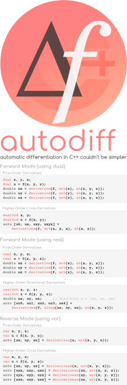
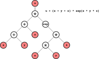

autodiff¶
autodiff is a C++17 library that uses modern and advanced programming techniques to enable automatic computation of derivatives in an efficient, easy, and intuitive way.
We welcome you to use autodiff and recommend us any improvements you think it is necessary. You may want to do so by chatting with us on our Gitter Community Channel and/or by making proposals by creating a GitHub issue.
Attention
There are breaking changes in autodiff v0.6! Please check the updated
Tutorials page to learn how to correctly include the header
files, the slightly changed API, and the new autodiff type real designed for
efficient higher-order directional derivatives. This is in contrast to the
dual type, which is designed for higher-order cross derivatives.
Demonstration¶
Consider the following function f(x, y, z):
double f(double x, double y, double z)
{
return (x + y + z) * exp(x * y * z);
}
which we use use to evaluate the variable u = f(x, y, z):
double x = 1.0;
double y = 2.0;
double z = 3.0;
double u = f(x, y, z);
How can we minimally transform this code so that not only u, but also its derivatives ∂u/∂x, ∂u/∂y, and ∂u/∂z, can be computed?
The next two sections present how this can be achieved using two automatic differentiation algorithms implemented in autodiff: forward mode and reverse mode.
Forward mode¶
In a forward mode automatic differentiation algorithm, both output variables and one or more of their derivatives are computed together. For example, the function evaluation f(x, y, z) can be transformed in a way that it will not only produce the value of u, the output variable, but also one or more of its derivatives (∂u/∂x, ∂u/∂y, ∂u/∂z) with respect to the input variables (x, y, z).
Enabling forward automatic differentiation for the calculation of derivatives
using autodiff is relatively simple. For our previous function f, we only
need to replace the floating-point type double with autodiff::dual for both
input and output variables:
dual f(const dual& x, const dual& y, const dual& z)
{
return (x + y + z) * exp(x * y * z);
}
We can now compute the derivatives ∂u/∂x, ∂u/∂y, and ∂u/∂z as follows:
dual x = 1.0;
dual y = 2.0;
dual z = 3.0;
dual u = f(x, y, z);
double ux = derivative(f, wrt(x), at(x, y, z));
double uy = derivative(f, wrt(y), at(x, y, z));
double uz = derivative(f, wrt(z), at(x, y, z));
The auxiliary function autodiff::wrt, an acronym for with respect to,
is used to indicate which input variable (x, y, z) is the selected one to
compute the partial derivative of f. The auxiliary function autodiff::at
is used to indicate where (at which values of its parameters) the derivative
of f is evaluated.
Reverse mode¶
In a reverse mode automatic differentiation algorithm, the output variable of a function is evaluated first. During this function evaluation, all mathematical operations between the input variables are "recorded" in an expression tree. By traversing this tree from top-level (output variable as the root node) to bottom-level (input variables as the leaf nodes), it is possible to compute the contribution of each branch on the derivatives of the output variable with respect to input variables.

Thus, a single pass in a reverse mode calculation computes all derivatives, in contrast with forward mode, which requires one pass for each input variable. Note, however, that it is possible to change the behavior of a forward pass so that many (perhaps even all) derivatives of an output variable are computed simultaneously (e.g., in a single forward pass, ∂u/∂x, ∂u/∂y, and ∂u/∂z are evaluated together with u, in contrast with three forward passes, each one computing the individual derivatives).
Similar as before, we can use autodiff to enable reverse automatic
differentiation for our function f by simply replacing type double with
autodiff::var as follows:
var f(var x, var y, var z)
{
return (x + y + z) * exp(x * y * z);
}
The code below demonstrates how the derivatives ∂u/∂x, ∂u/∂y, and ∂u/∂z can be calculated:
var x = 1.0;
var y = 2.0;
var z = 3.0;
var u = f(x, y, z);
auto [ux, uy, uz] = derivatives(u, wrt(x, y, z));
The function autodiff::derivatives will traverse the expression tree stored
in variable u and compute all its derivatives with respect to the input
variables (x, y, z), which are then stored in the object dud. The
derivative of u with respect to input variable x (i.e., ∂u/∂x) can then
be extracted from dud using dud(x). The operations dud(x), dud(y),
dud(z) involve no computations! Just extraction of derivatives previously
computed with a call to function autodiff::derivatives.
Get in touch!¶
Contact us on Gitter or via a GitHub Discussion if you need support and assistance when using autodiff. If you would like to report a bug, then please create a new GitHub Issue.